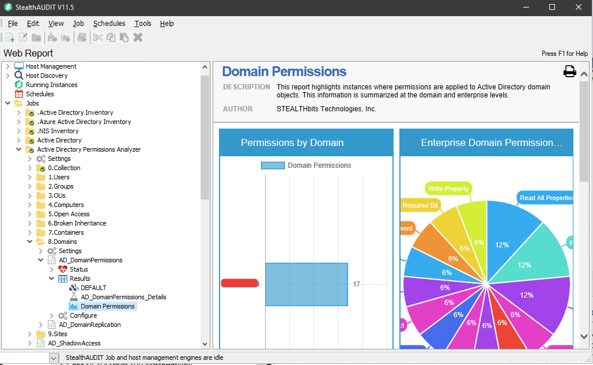
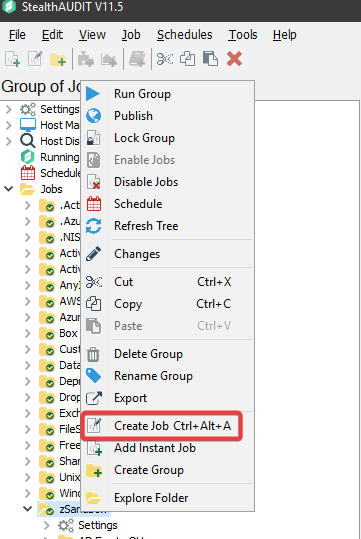
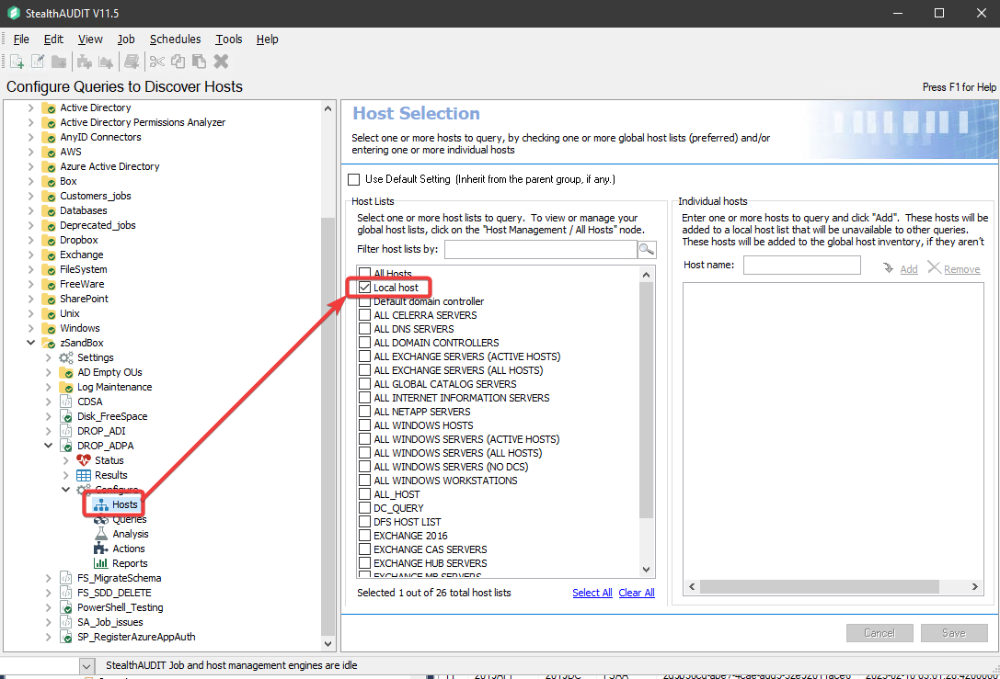
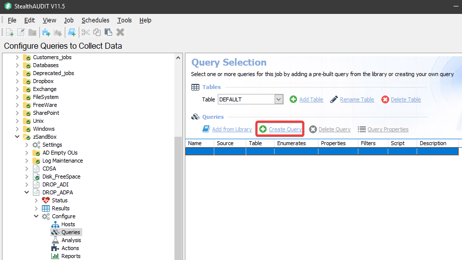
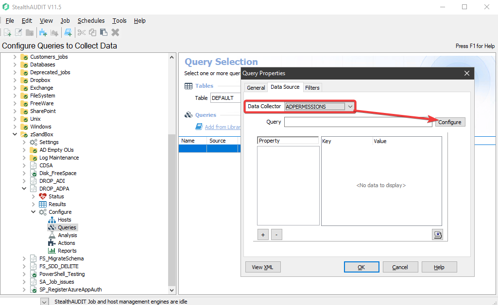
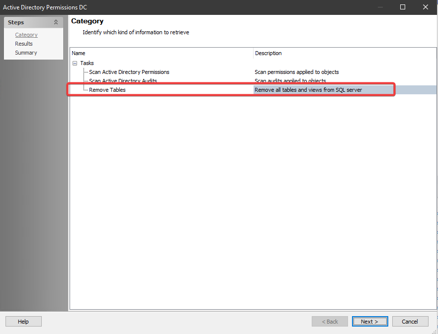
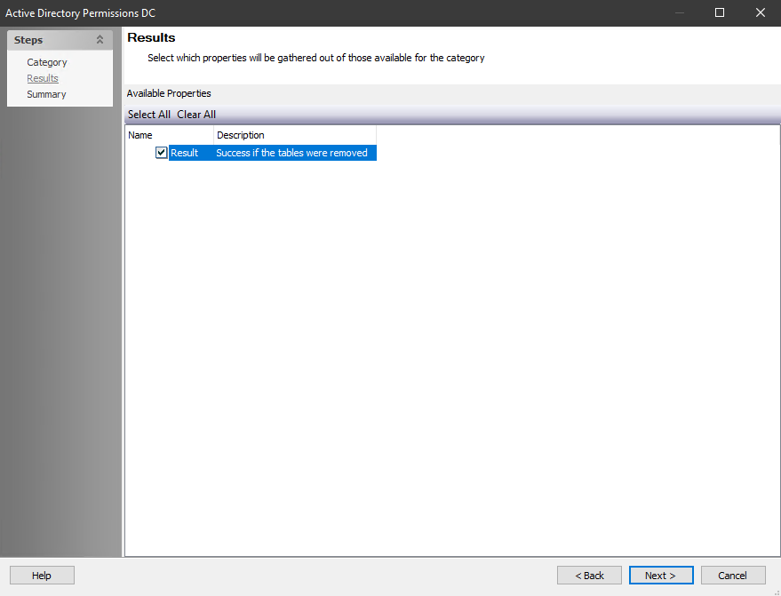

Symptoms
Old data in the Active Directory Permissions Analyzer (ADPA) reports from deprecated Domains.Example of the incorrect data:

Cause
ADPA Data is not cleared when running only the ADInventory (ADI): Category >> Drop Domain – Remove host domain related data from SQL server option seen under the following:https://helpcenter.netwrix.com/bundle/StealthAUDIT_11.5/page/Content/StealthAUDIT/Data_Collectors/ADInventory_Data_Collector/ADInventory_Query_Configuration/Category.htm
Resolution
We will need to create a new Job to work with the APDA data in question.To do so we can follow the steps below.
- Create a new Job in the StealthAUDIT (SA) console: right click the Jobs Node in the left-hand window and select Create Job:

Select the Local host in the jobs host list:

-
Click on the Create Query:
 -
Configure the jobs query Properties.
Under the Data Sources tab, select the ADPERMISSIONS option from the dropdown menu then click on Configure.

Select Remove Tables and click Next:

Check the Results option: Click Next à Finish àOk.
 - Now Run the new Job.
-
Once the job completes run the ADPA report, it should complete with an
error.
Examples:
Invalid object name 'dbo.SA_ADPerms_PermissionsView'.
Invalid object name 'dbo.SA_ADPerms_Permissions*View'.
This will recreate the needed ADPA Tables and Views needed for the Reports.